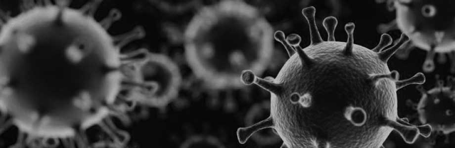
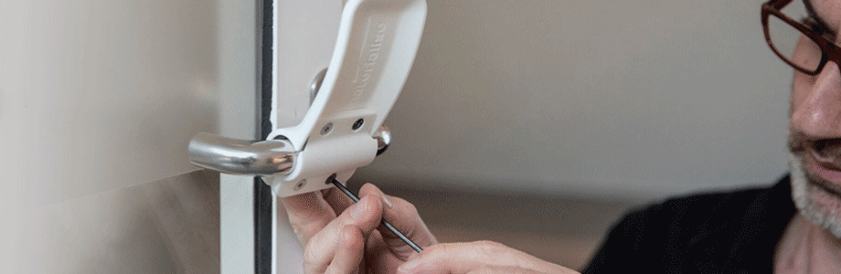
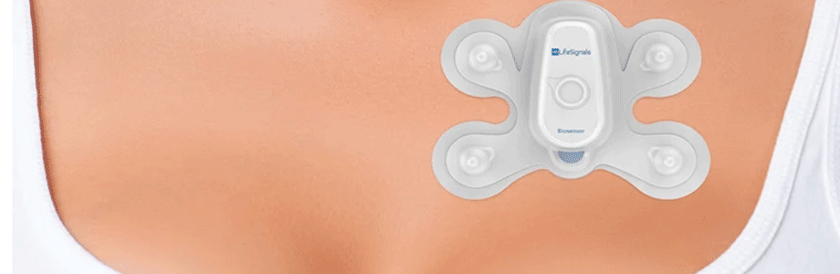
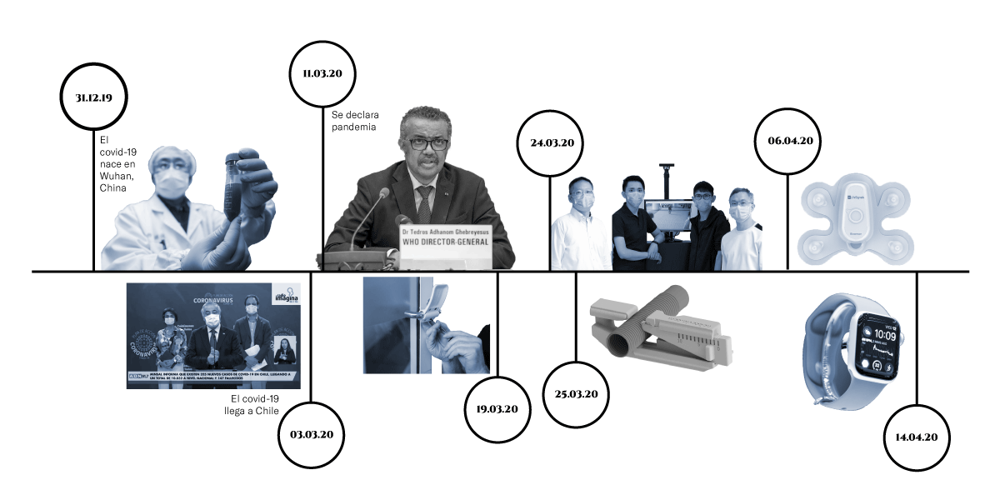

Investigación Covid-19
Diseño de Wearables para sobrevivir en escenarios perjudiciales para la salud.

Junto a Ignacio Saavedra estamos desarrollando un proceso de investigación respecto al COVID-19. Buscamos referentes actuales que nos brinden la mayor cantidad de información posible para desarrollar un proyecto futuro que se encargue de solucionar la movilidad en el contexto de pandemia y para re-diseñar y cuestionarnos cómo van a funcionar los objetos de ahora en adelante. El tema de movilidad abre diversas aristas que nos obligan a re-plantear ciertas costumbres en nuestra rutina diaria.
Dicho esto, con Carolina nos planteamos las siguientes preguntas: ¿Cuáles son los objetos clave en un entorno perjudicial para la salud?, ¿Cuál es el equipamiento indispensable para que la sociedad sobreviva y pueda desenvolverse en zonas de alto riesgo?, ¿Podemos realmente vivir sin salir de nuestras casas para siempre y trabajar desde las dichas?.
Superficies en las que el virus puede subsistir
Creemos que es importante considerar el material del objeto que vamos a desarrollar, debido al alto riesgo que implica manipular dispositivos que atraen el virus. Por esa razón queremos compartir la siguiente tabla:

Tabla del estudio con la persistencia de los distintos coronavirus analizados según la superficie y temperatura. Fuente: The Journal of Hospital Infection
Aquí puedes leer más sobre el virus COVID-19
Referentes




- Biosensor Patch 1AX/06.04.2020 Diseñado por Lifesignals y testeado desde 2019

¿Cómo vamos a interactuar entre nosotros después de que pase el virus con dispositivos de esta clase?

Mapa de actores
Las problemáticas sobre la movilidad en general son dinámicas en el tiempo, para poder entender estas relaciones temporales deben elaborar una linea de tiempo gráfica que contenga la relaciones que se establecen en el tiempo identificando en que aspectos podemos aportar valor con nuestra propuesta, o dónde identifican las brechas que el proyecto podría resolver. Además es importante establecer un mapa de actores preliminar, en el que declaren que otros actores formarán parte del ecosistema en el que plantearán sus propuestas de diseño.